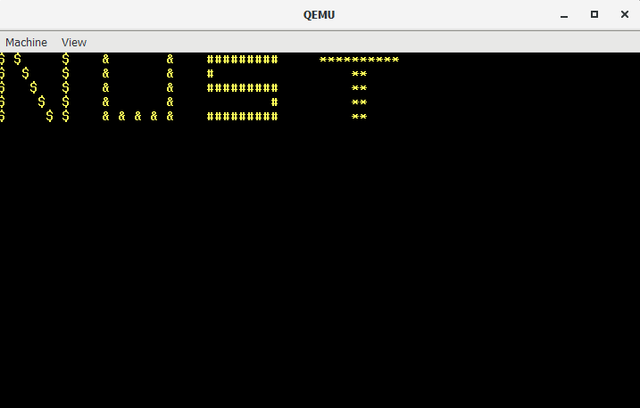

Intro
Making this OS was not easy at all.
But with The Help of the provided videos i was able to make the requires os.
This is a 64-bit operating system which write the word NUST with differents symbols
Tools
Installation
- Install Visual Studio code it will help you in the programming aspect
- If you are using linus you may not need docker but is neccessary for windows and mac
- After intsalling Docker you will need to install wsl2 for a linux subsystem
- Install Qemu to emulate your output. Add Qemu to your environment variables
Docker File
To make your docker image make a buildenv folder and make a docker file and then add the following code to it
FROM randomdude/gcc-cross-x86_64-elf
RUN apt-get update
RUN apt-get upgrade -y
RUN apt-get install -y nasm
RUN apt-get install -y xorriso
RUN apt-get install -y grub-pc-bin
RUN apt-get install -y grub-common
VOLUME /root/env
WORKDIR /root/env
To create your docker image run the following code in power shell.
docker build buildenv -t myos-buildenv
And then to run this code to run the docker image.
docker run --rm -it -v "${pwd}:/root/env" myos-buildenv
Coding
Now we will discuss how the file and the code in them is used to make the os
-
/src
-
/intf
-
/impl
-
kernel
-
/x86_64
-
print.c
-
/boot
-
header.asm
-
main.asm
-
main64.asm
-
\targets
header.asm
Has data for bootloader
main.asm
Is the main file and has the code to make the base of the OS
main64.asm
Has code to covert into a 64-bit OS.
linker.ld
Linker File for the OS
grub.cfg
This file locates kernel bin
main.c
Will Contain the code which prints the output on screen
print.h
This contains functions used to print text.
print.c
Has functios of print.h and fixed display settings
Makefile
Has code to compile the os and generate the os iso file
Final Commands
Run the command in power shell
make build-x86_64
Then close the docker and run the qemu command
qemu-system-x86_64.exe -L "C:\Program Files\qemu" -cdrom dist/x86_64/kernel.iso
OUTPUT

Errors
-
The error for installation of wsl2
-
The error for make build-x86_64 not found( mostly because of error in code)
-
Error for Qemu becuse it is not added to enviornment variables.